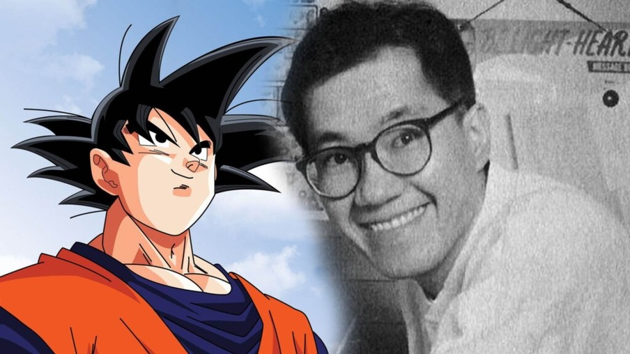

Morre criador do Dragon Ball: como Akira Toriyama criou saga de anime mais reconhecida no Ocidente
O criador de Dragon Ball, um dos quadrinhos japoneses mais influentes e mais vendidos de todos os tempos, morreu aos 68 anos.
Akira Toriyama sofreu um hematoma subdural agudo, um tipo de sangramento próximo ao cérebro, informou seu estúdio nesta sexta-feira (8/3).
Toriyama tinha obras incompletas no momento da sua morte. Ele morreu em 1º de março e apenas sua família e poucos amigos compareceram ao seu funeral, de acordo com um comunicado do site Dragon Ball.
Dragon Ball, a história que muitos especialistas consideram responsável pela popularização do mangá (equivalente japonês aos quadrinhos) no Ocidente, é extremamente popular em todo o mundo e a série de quadrinhos também gerou versões em desenhos animados e filmes.
A série de quadrinhos Dragon Ball estreou em 1984. Ela segue um menino chamado Son Goku em sua busca para coletar bolas de dragão mágicas para defender a Terra contra humanoides alienígenas chamados Saiyans.

O começo
Akira Toiriyama nasceu em 1955, na pequena cidade de Kiyosu, na província de Aichi, no leste do Japão.
Como o próprio Toriyama explicou, desde a escola ele se interessava por mangás, e foi entre seus colegas de classe que ele teve seu primeiro público.
"Sempre gostei de desenhar", disse ele ao site Stormpages há alguns anos. "Quando eu era pequeno, não tínhamos tantas formas de entretenimento como hoje, então todos nós desenhávamos. Na escola primária, todos desenhávamos mangás ou personagens animados e os mostrávamos uns aos outros."
Foi nessa época que Toriyama também começou a expandir seu horizonte de influências.
O criador de Dragon Ball se declarou um grande fã de filmes de animação da Disney em sua infância (ele tinha uma fixação particular com 101 Dálmatas), filmes de velho-oeste (que na época de Toriyama estavam atingindo sua expressão máxima com Sergio Leone), ficção científica (Toriyama fez muitas referências a Star Wars em suas histórias) e ação (de Bruce Lee e Jackie Chan a Aliens, de James Cameron).
Sua primeira oportunidade de escrever um mangá profissionalmente viria em 1977, depois que um dos editores da Shueisha - a editora de mangá mais importante do Japão - viu seu trabalho durante um concurso anual da revista Monthly Shonen Jump para encontrar novos talentos.
Contratado pela editora, o jovem Akira teve histórias menores que passaram desapercebidas por alguns anos.